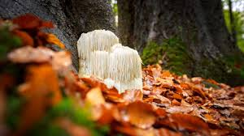
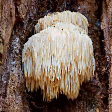
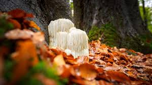
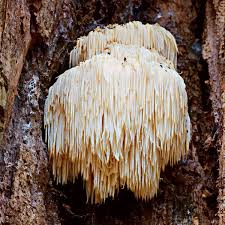

About Lion’s Mane
The Lion’s Mane Mushroom (Hericium erinaceus) is a white, shaggy fungus that looks like a lion’s mane as it grows. It is both edible and medicinal, praised for its ability to support brain health, focus, and nerve regeneration.
Fascinating Facts
- Native to North America, Europe, and Asia.
- May stimulate brain cell growth and improve memory.
- Used for centuries in Chinese medicine.
- Tastes like lobster or crab when cooked.
Gallery
 




Sources
Healthline: Lion’s Mane Mushroom Benefits
Wikipedia: Hericium erinaceus